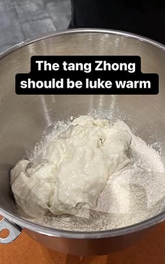
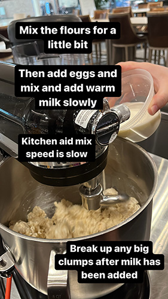
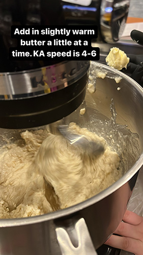
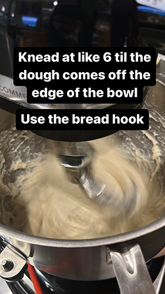
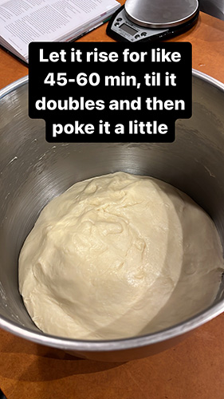
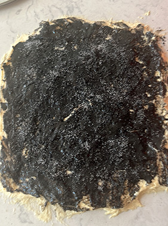
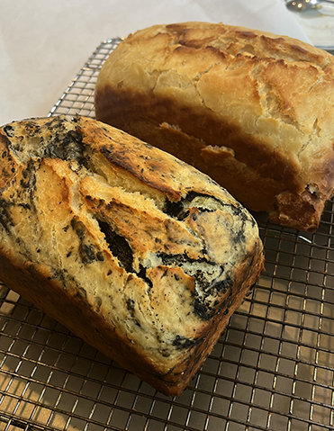

Shoutout to Kami for making amazing milk bread and showing me how to follow this recipe--Note this recipe is from Mister Jiu's in Chinatown cookbook and has very few mods.
Everything listed in grams bc you should weigh your ingredients. Way more accurate and also less work just dumping stuff in a bigger container til you hit a number lol. Get a scale.
Note this makes two 8 inch loaves. You need a bread pan, best if you have a pullman pan (the kind w/a lid that you can remove).
BREAD FLOUR != ALL PURPOSE. When you wonder why your bread is not that soft because you decided to cut costs and use AP flour, wonder if the 3 hours of work you did for your disappointing milk bread was worth it for the $1 you saved. Fine, maybe you saved $2 but bread flour can be got at Costco.
There are 2 steps. Make tangzhong. Make bread.
Tangzhong Ingredients
- 120ml water (eh or grams, all the same)
- 120ml whole milk
- 35 g bread flour
Bread Ingredients
- 455g bread flour
- 75-80g sugar
- 2 teaspoon (8g) salt^
- 1 Tbsp instant dry yeast (9-10g)
- Tangzhong
- 1 egg at room temp
- 175ml of whole milk ^^, luke warm
- 6 Tbs unsalted butter at room temp. **Make sure the butter is soft enough and not solid or it won't mix in.
Notes:
^Tech the recipe says kosher salt, but I've just used regular table salt
^^ Orig calls for room temp milk, but I'll use luke warm so it activates the yeast more. Prob not that important of a change.
Mixins
- 45ish g white chocolate chips
- black sesame paste (used about 70g of paste for one loaf)
- coarsely ground black sesame
- small spoon of sugar for sprinkling
Instructions (from the book)
- Whisk tangzhong ingredients in small saucepan on medium heat til pudding texture. (approx 4-5 min). Remove from heat and prep the next step with some pace because you want the tangzhong to be lukewarm when you add it and it also cools quite quickly. By the time you finish prepping, tangzhong will probably be cool enough to put in.
- While you prep the dry ingredients, give the tangzhong a mix every once in a while so the top doesn't harden while it cools.
- In mixer with the dough attachment, combine flour, sugar, yeast, salt. Whisk or give it a shake to mix up the ingredients. Add lukewarm tangzhong and mix on low speed until moist clumps form (about 1-2 min). I usually break up and big chunks, unclear if it matters.

- Add egg and mix until combined. (Usually 1-2 min). Unclear if it matters if it's a bunch of clumps at this point vs one mass. I feel like small clumps is easier to mix in the milk.
- Add milk in slowly and mix until get very wet dough. The book says this takes a minute but it always takes me several minutes. The dough never seems to want to absorb all the milk quickly.

- On a 5-6 speed on the Kitchen Aid/medium, add the butter like 1-2 tbsp at a time. Let all the butter get mixed in before adding more. You shouldnt see any butter.

- Mix another 10 min until dough is smooth and sticky. (adding butter + this step could take 15-20 min)

- Cover and let dough rest for 45-60 min.

- Split dough in half, with dough bench/scraper, spread dough as much as possible til its like a cm thick (prob v sticky). For black sesame bread, spread on a thick coating of paste. If you have black sesame seeds you can chop/coarsely food process, sprinkle that with a thin layer of sugar on top on the entire surface. For white chocolate, I cut up white chocolate chips into flakes so the weight doesn't keep the bread from puffing.

- Roll it up and set it in a buttered pan. Brush/splatter some milk on the top-I think this is what gives the bread its golden brown crust. If you over do it and get milk in the corner of the pan, it'll be hard to get out later.
- Let it rest for 30-45 minutes. I think this might be important for getting it to be extra soft. When I've just thrown it straight in the oven, it's denser.
-
Book says bake at 375F but I like 350F more. Bake for 30 min w/cover, remove cover and bake for approx another 10-15 minutes til top is golden brown. Remove from pan immediately and put on cooling rack.

{kind=link}
{kind=link}
{kind=link}
{kind=link}
{kind=link}
{kind=link}
{kind=link}